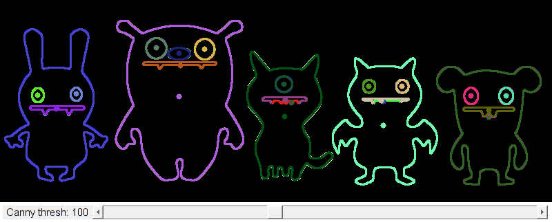

Image Moments
We learn to calculate the moments of an image.
In this sample you will learn how to use the following OpenCV functions:
Sources:
function varargout = moments_demo_gui(im) % load source image if nargin < 1 src = imread(fullfile(mexopencv.root(),'test','monster.jpg')); elseif ischar(im) src = imread(im); else src = im; end % Convert image to gray and blur it if size(src,3) == 3 src = cv.cvtColor(src, 'RGB2GRAY'); end src = cv.blur(src, 'KSize',[3 3]); % create the UI h = buildGUI(src); if nargout > 0, varargout{1} = h; end end function onChange(~,~,h) %ONCHANGE Event handler for UI controls % retrieve current values from UI controls thresh = round(get(h.slid, 'Value')); set(h.txt, 'String',sprintf('Canny thresh: %3d',thresh)); % Detect edges using Canny canny_output = cv.Canny(h.src, [thresh thresh*2], 'ApertureSize',3); % Find contours contours = cv.findContours(canny_output, 'Mode','Tree', 'Method','Simple'); % Get the moments and compute the mass center mu = cell(size(contours)); mc = cell(size(contours)); for i=1:numel(contours) mu{i} = cv.moments(contours{i}, 'BinaryImage',false); mc{i} = [mu{i}.m10, mu{i}.m01] ./ mu{i}.m00; end % Draw contours drawing = zeros([size(canny_output) 3], 'uint8'); for i=1:numel(contours) clr = randi([0 255], [1 3], 'uint8'); drawing = cv.drawContours(drawing, contours, 'ContourIdx',i-1, ... 'Color',clr, 'Thickness',2); drawing = cv.circle(drawing, mc{i}, 4, ... 'Color',clr, 'Thickness','Filled'); end % show result set(h.img, 'CData',drawing); drawnow; % Calculate the area with the moments 00 and compare with the result of % the OpenCV function fprintf('\t Info: Area and Contour Length \n'); for i=1:numel(contours) fprintf([' * Contour[%d] - Area (M_00) = %.2f - Area OpenCV: %.2f' ... ' - Length: %.2f \n'], i, mu{i}.m00, ... cv.contourArea(contours{i}), ... cv.arcLength(contours{i}, 'Closed',true)); end end function h = buildGUI(img) %BUILDGUI Creates the UI % parameters thresh = 100; max_thresh = 255; sz = size(img); sz(2) = max(sz(2), 250); % minimum figure width % build the user interface (no resizing to keep it simple) h = struct(); h.src = img; h.fig = figure('Name','Image Moments Demo', ... 'NumberTitle','off', 'Menubar','none', 'Resize','off', ... 'Position',[200 200 sz(2) sz(1)+29]); if ~mexopencv.isOctave() %HACK: not implemented in Octave movegui(h.fig, 'center'); end h.ax = axes('Parent',h.fig, 'Units','pixels', 'Position',[1 30 sz(2) sz(1)]); if ~mexopencv.isOctave() h.img = imshow(img, 'Parent',h.ax); else %HACK: https://savannah.gnu.org/bugs/index.php?45473 axes(h.ax); h.img = imshow(img); end h.txt = uicontrol('Parent',h.fig, 'Style','text', 'FontSize',11, ... 'Position',[5 5 130 20], 'String',sprintf('Canny thresh: %3d',thresh)); h.slid = uicontrol('Parent',h.fig, 'Style','slider', 'Value',thresh, ... 'Min',0, 'Max',max_thresh, 'SliderStep',[1 10]./(max_thresh-0), ... 'Position',[135 5 sz(2)-135-5 20]); % hook event handlers, and trigger default start set(h.slid, 'Callback',{@onChange,h}, ... 'Interruptible','off', 'BusyAction','cancel'); onChange([],[],h); end
Info: Area and Contour Length * Contour[1] - Area (M_00) = 7.50 - Area OpenCV: 7.50 - Length: 86.73 * Contour[2] - Area (M_00) = 2.00 - Area OpenCV: 2.00 - Length: 5.66 * Contour[3] - Area (M_00) = 7.00 - Area OpenCV: 7.00 - Length: 200.63 * Contour[4] - Area (M_00) = 271.00 - Area OpenCV: 271.00 - Length: 62.28 * Contour[5] - Area (M_00) = 254.00 - Area OpenCV: 254.00 - Length: 59.94 * Contour[6] - Area (M_00) = 266.00 - Area OpenCV: 266.00 - Length: 61.46 * Contour[7] - Area (M_00) = 249.00 - Area OpenCV: 249.00 - Length: 59.11 * Contour[8] - Area (M_00) = 15486.50 - Area OpenCV: 15486.50 - Length: 859.37 * Contour[9] - Area (M_00) = 15346.50 - Area OpenCV: 15346.50 - Length: 859.51 * Contour[10] - Area (M_00) = 511.00 - Area OpenCV: 511.00 - Length: 173.94 * Contour[11] - Area (M_00) = 494.00 - Area OpenCV: 494.00 - Length: 170.77 * Contour[12] - Area (M_00) = 390.00 - Area OpenCV: 390.00 - Length: 73.94 * Contour[13] - Area (M_00) = 370.00 - Area OpenCV: 370.00 - Length: 71.60 * Contour[14] - Area (M_00) = 388.00 - Area OpenCV: 388.00 - Length: 73.94 * Contour[15] - Area (M_00) = 370.50 - Area OpenCV: 370.50 - Length: 72.18 * Contour[16] - Area (M_00) = 218.00 - Area OpenCV: 218.00 - Length: 1801.01 * Contour[17] - Area (M_00) = 13611.00 - Area OpenCV: 13611.00 - Length: 754.04 * Contour[18] - Area (M_00) = 13428.50 - Area OpenCV: 13428.50 - Length: 753.94 * Contour[19] - Area (M_00) = 19.00 - Area OpenCV: 19.00 - Length: 103.25 * Contour[20] - Area (M_00) = 2.00 - Area OpenCV: 2.00 - Length: 5.66 * Contour[21] - Area (M_00) = 7.50 - Area OpenCV: 7.50 - Length: 197.70 * Contour[22] - Area (M_00) = 447.00 - Area OpenCV: 447.00 - Length: 79.60 * Contour[23] - Area (M_00) = 426.00 - Area OpenCV: 426.00 - Length: 77.25 * Contour[24] - Area (M_00) = 16889.00 - Area OpenCV: 16889.00 - Length: 1006.47 * Contour[25] - Area (M_00) = 16696.00 - Area OpenCV: 16696.00 - Length: 1007.78 * Contour[26] - Area (M_00) = 469.50 - Area OpenCV: 469.50 - Length: 189.36 * Contour[27] - Area (M_00) = 451.50 - Area OpenCV: 451.50 - Length: 181.36 * Contour[28] - Area (M_00) = 282.00 - Area OpenCV: 282.00 - Length: 62.28 * Contour[29] - Area (M_00) = 264.00 - Area OpenCV: 264.00 - Length: 59.94 * Contour[30] - Area (M_00) = 251.00 - Area OpenCV: 251.00 - Length: 59.46 * Contour[31] - Area (M_00) = 237.00 - Area OpenCV: 237.00 - Length: 57.11 * Contour[32] - Area (M_00) = 30475.00 - Area OpenCV: 30475.00 - Length: 1044.21 * Contour[33] - Area (M_00) = 30265.00 - Area OpenCV: 30265.00 - Length: 1041.86 * Contour[34] - Area (M_00) = 13.50 - Area OpenCV: 13.50 - Length: 458.33 * Contour[35] - Area (M_00) = 432.50 - Area OpenCV: 432.50 - Length: 83.36 * Contour[36] - Area (M_00) = 417.00 - Area OpenCV: 417.00 - Length: 81.60 * Contour[37] - Area (M_00) = 684.50 - Area OpenCV: 684.50 - Length: 98.67 * Contour[38] - Area (M_00) = 659.50 - Area OpenCV: 659.50 - Length: 96.33 * Contour[39] - Area (M_00) = 699.50 - Area OpenCV: 699.50 - Length: 99.50 * Contour[40] - Area (M_00) = 674.50 - Area OpenCV: 674.50 - Length: 97.15